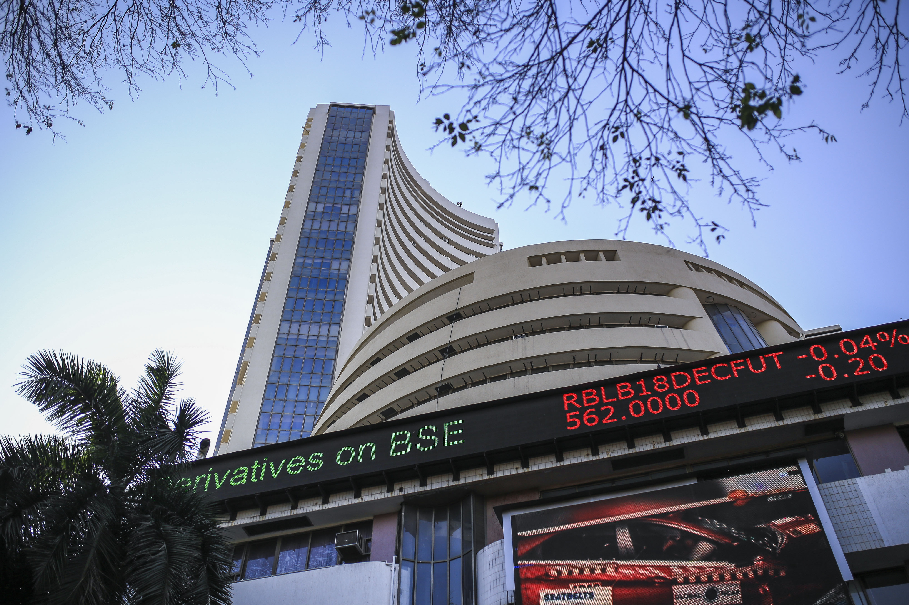
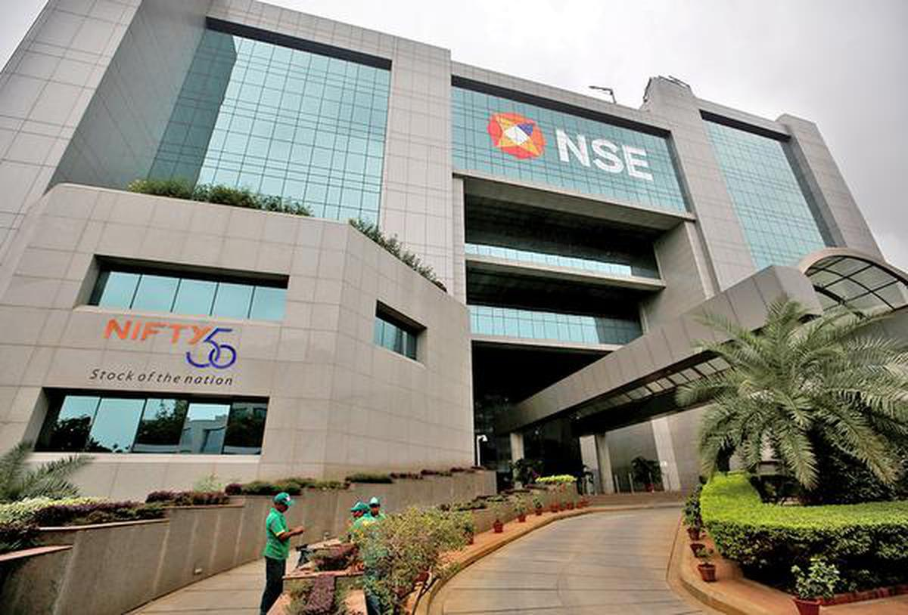
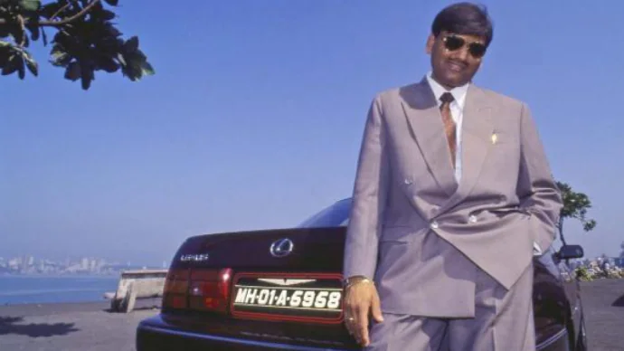
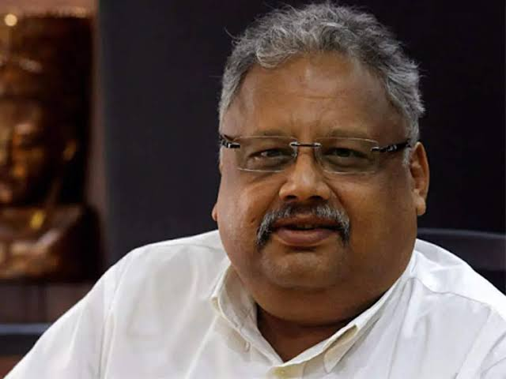
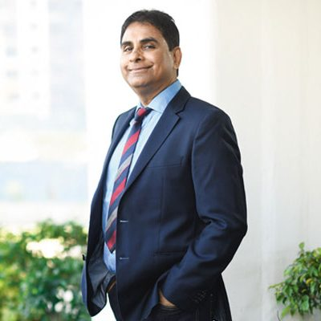

: Bombay Stock Exchange :Bombay Stock Exchange was started by Premchand Roychand in 1875.While BSE Limited is now synonymous with Dalal Street, it was not always so. In the 1850s, five stock brokers gathered together under a Banyan tree in front of Mumbai Town Hall, where Horniman Circle is now situated. A decade later, the brokers moved their location to another leafy setting, this time under banyan trees at the junction of Meadows Street and what was then called Esplanade Road, now Mahatma Gandhi Road. With a rapid increase in the number of brokers, they had to shift places repeatedly. At last, in 1874, the brokers found a permanent location, the one that they could call their own. The brokers group became an official organization known as "The Native Share & Stock Brokers Association" in 1875. On 12 March 1993, a car bomb exploded in the basement of the building during the 1993 Bombay bombings.The BSE is also a Partner Exchange of the United Nations Sustainable Stock Exchange initiative, joining in September 2012.BSE established India INX on 30 December 2016. India INX is the first international exchange of India.BSE became the first stock exchange in the country to launch commodity derivatives contract in gold and silver in October 2018. |
 |
: National Stock Exchange :National Stock Exchange was incorporated in the year 1992 to bring about transparency in the Indian equity markets. NSE was set up at the behest of the Government of India, based on the recommendations laid out by the Pherwani committee in 1991 and the blueprint created by Ravi Narain, RH Patil and SS Nadkarni in 1992. Instead of trading memberships being confined to a group of brokers, NSE ensured that anyone who was qualified, experienced, and met the minimum financial requirements was allowed to trade. The Economic Times estimates that as of April 2018, 6 crore (60 million) retail investors had invested their savings in stocks in India, either through direct purchases of equities or through mutual funds. Earlier, the Bimal Jalan Committee report estimated that barely 3% of India's population invested in the stock market, as compared to 27% in the United States and 10% in China. |
 |
Harshad Mehta :Harshad Shantilal Mehta (29 July 1954 — 31 December 2001) was an Indian stockbroker and a convicted fraudster. Mehta's involvement in the 1992 Indian securities scam made him infamous as a market manipulator. Of the 27 criminal charges brought against Mehta, he was only convicted of four, before his death (by sudden heart attack) at age 47 in 2001.It was alleged that Mehta engaged in a massive stock manipulation scheme financed by worthless bank receipts, which his firm brokered for "ready forward" transactions between banks. Mehta was convicted by the Bombay High Court and the Supreme Court of India for his part in a financial scandal valued at ₹100 billion (US$1.3 billion) which took place on the Bombay Stock Exchange (BSE). The scandal exposed the loopholes in the Indian banking system and the Bombay Stock Exchange (BSE) transaction system, and consequently the SEBI introduced new rules to cover those loopholes. He was on trial for 9 years, until he died at the end of 2001 from a heart attack. Harshad Shantilal Mehta was born on 29 July 1954, at Paneli Moti, Rajkot district, in a Gujarati Jain family.His early childhood was spent in Borivali, where his father was a small-time textile businessman. |
 |
Rakesh Jhunjhunwala :Rakesh Jhunjhunwala (5 July 1960 – 14 August 2022) was an Indian billionaire business magnate, Chartered Accountant, stock trader, and investor. He began investing in 1985 with a capital of ₹5,000, with his first major profit in 1986. At the time of his death he had an estimated net worth of US$5.8 billion, making him the 438th richest person in the world.He was a partner in his own asset management firm, Rare Enterprises. Rakesh Jhunjhunwala was born on 5 July 1960 and grew up in a Rajasthani Marwari family, in Mumbai. His father Radheshyam Jhunjhunwala worked as a Commissioner of Income Tax. His surname indicates that his ancestors belonged to Jhunjhunu in Rajasthan. He graduated from Sydenham College and thereafter enrolled at the Institute of Chartered Accountants of India. Besides being an active investor, he served as chairperson and director for several companies. He was also a founder of Akasa Air. He was investigated for insider trading and settled with the Securities and Exchange Board of India (SEBI) in 2021. Jhunjhunwala was often referred to as "India's Warren Buffett" or the "Big Bull of India", and was widely known for his stock market predictions and bullish outlooks. |
 |
Vijay Kedia :Vijay Kishanlal Kedia is an Indian investor born in Kolkata. He has been involved in the market since he was 19 years old. Kedia and his company - Kedia Securities Pvt. Ltd. are the largest shareholder (after the promoter) in several listed companies. Kedia was a keynote speaker at IIM Ahmedabad, IIM Bangalore & MDI Murshidabad . and he has been a TEDx speaker 2 times He was invited to speak at London Business School. He realized his passion for stock market when he was 14 and joined the stock market when he turned 19. He started doing his own trading without any success. After few years he left Kolkata and came to Mumbai to try his luck. In 2004 and 2005 he identified and invested in three such shares (Atul auto, Aegis logistics, Cera sanitaryware) which appreciated more than 100 times in next 10 to 12 years. In early 2012, he correctly predicted that India was at the beginning of a structural bull run. In 2016 Kedia was featured at #13 in Business World list of Successful Investors In India In 2017 "MoneyLife Advisory" launched an "Ask Vijay Kedia microsite In 2017 Vijay Kedia's portfolio stocks rose up to 170%. In 2018, he was invited to speak at London Business School. In November 2018, he was invited to speak at TEDx. |
 |